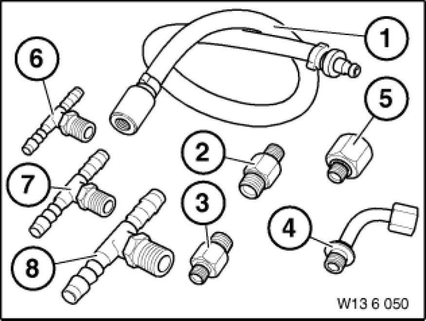
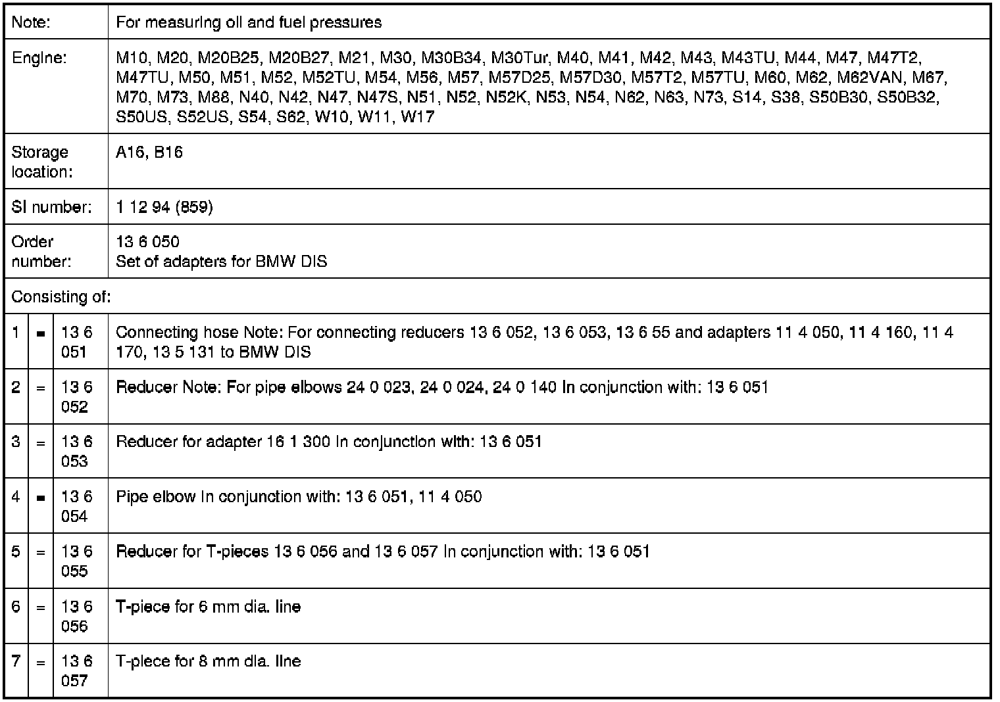

Operation CHARM
: Car repair manuals for everyone.
Home
>>
BMW
>>
2007
>>
X3 3.0si (E83) L6-3.0L (N52K)
>>
Repair and Diagnosis
>>
Powertrain Management
>>
Fuel Delivery and Air Induction
>>
Tools and Equipment
>>
Electrical / Mechanical Repair
>>
13 6 050 Set of Adapters for BMW DIS
13 6 050 Set of Adapters for BMW DIS
13 6 050 Set of adapters for BMW DIS
Minimum set: Mechanical tools

